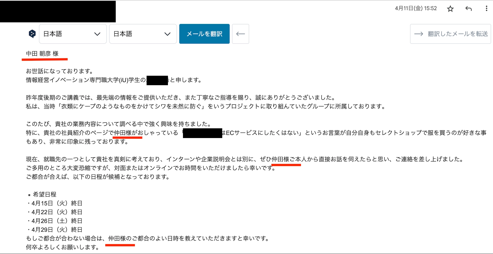
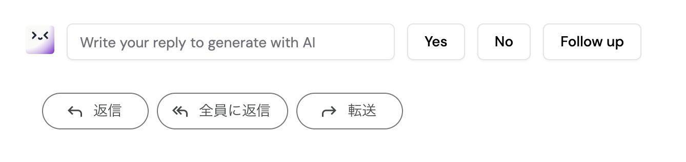

インターンに臨む前に、以下のご指導ご教授を頂いていると良いと感じました。
学生の性格なのだと思いましたが、基本的に待ちの姿勢であること、伝えても理解しているのか理解していないのか 反応がなかったりする と、正直業務を任せることが難しいと感じています。最低限そのあたりのセットアップをしてきてもらえると有難いです。
貴校の学生は全体的に想定以上の動きをしていただきました。しかし、欠席・遅刻の回数が多い 点は気になりました。後期からは貴校として徹底した出席管理や欠席・早退の基準の明確化をしていただけますと弊社としてより学生の管理がしやすくなると思いました。
今後の社会人生活を見据えた際に、ビジネスマナーの点で改善の余地 があると感じております。ご本人に悪意がないことは十分に理解しておりますが、身だしなみや業務中の姿勢、言葉遣い など、社会人として求められる水準には、今一歩のところと感じます。今回は基本的に弊社の社内メンターとの関わりに留まっているため、業務上の大きな問題には至っておりません。しかしながら、今後より厳格な指導をされる方や、社外のお客様と接する場面を想定した場合、ご本人の将来のために、今のうちから基本的なビジネスマナーを意識できるよう、ご指導いただけると幸いです。
真面目で素直で、とても良い子だと思うのですが、たまに寝てしまっている ことがありました。普通に腕に突っ伏して寝ていることもあったので注意しましたが、社員は目標達成に向けて必死で働いており、その時間を割いて学生のみなさんに教えさせていただいたりしているので、最低限のマナーは実習前にお伝えいただけると嬉しいです。毎日働く経験がなくて疲れるのはわかるのですが、自席で寝るのはあまり印象が良くないです。
業務時間中の居眠りが多く、全体的な評価が低くなっております。指導者から居眠りの指摘があった数時間後、役員の勉強会やお客様等の訪問先でも居眠りする姿が見られたため、その後の資料作成等の成果物や発表の精度が他二名と比べて数段低くなっていました。課されたタスクを良くも悪くもAIを活用することで、自分で考えて深堀をせずに完了したと思い込む場面も散見されたので、適宜指導者からヒントを与えて取り組んでもらいましたが改善は見られませんでした。グループワークの際には生き生きと発言し、明るい表情をしていたのでコミュニケーションの評価は3にいたしました。グループワークの中でも、課題を発見する能力や論理的な思考力は持っていると感じることがありました。居眠りについては怠惰でしているというよりは、急に電池が切れたように目を閉じてしまうようでした。⭕️⭕️さんに⭕️⭕️さんから質問したにも関わらず解答中に寝落ちしてしまったようなので、気持ちではなく身体の問題ではないかと危惧しています。今後懸念していることといたしまして、下期は上期以上にお客様先等の訪問の機会を増やしたカリキュラムで皆様の成長に寄与したいのですが、お客様先へ⭕️⭕️さんを連れていくことは難しいと評価しています。居眠りがあるとお客様や訪問担当の先輩に対して大変失礼にあたり、最悪のケースとしてお客様からのクレームにまで発展することもあるかと存じます。今回の弊社での実習は本人の希望とギャップがあった点、下期のカリキュラムにおいて⭕️⭕️さん⭕️⭕️さんと同じ取り組みができない点、居眠りをすることで同じ事務所にいる他従業員からも多数指摘が挙がる点を踏まえますと、⭕️⭕️さんのためにも下期から別の企業にインターン参加をした方が良いかと存じます。
自身で2か月間の目標とアクションプランを設定し、毎週の報告会を通じて目標達成に向けて取り組む姿勢が見られました。また、開発業務の目的を理解し、要件定義から実装まで全工程をやり遂げた点は高く評価しています。一方で、計画の修正や他者との協働には指導者の手厚いフォローが必要な場面が多く見受けられました。加えて、40日間コンスタントに発生した勤務中の居眠りや、実習後半にかけての身だしなみの不備など、自己管理や企業に参加する意識に欠け、他社員からの指摘も発生しました。主体性や能動的に動く姿勢が不足していると判断し、該当項目は厳しい評価としています。毎朝・終業後の大きな声での挨拶や、実習を通じて徐々にメモを取る習慣が身についてきた点は大変素晴らしい長所であり、ぜひ継続してください。今後は社会人としてより高い意識を持ち、勤務中の睡魔に対する対策など自己管理を徹底し、自らを律する力を養うことを期待しています。
該当する学生についてですが、総じて全員頑張ってくれていることを前提としていただきたいものの、⭕️⭕️くん・⭕️⭕️くんは就業時間中に寝ているところがよく見られます。念のため、休憩時間中なのかも確認しましたが、そうでない時間帯にも突っ伏して寝ているところがみられるため、個別に注意をしているところです。会議を聞いて議事録を書く、データをまとめる、などの一見地味な仕事でも意義があることが多いため、ぜひ集中してほしいと思っているのですが、なかなか日ごろの疲れで寝てしまうことが多そうに見えております。本日は⭕️⭕️君が体調不良でお休みのため、日ごろの体調管理や、就業時間中に集中が切れたときのリフレッシュの仕方なども、学校側からご指導いただけますと幸いです。⭕️⭕️君はだれよりも早く来てくれているので、ひとくくりに「インターン生」とするのはとてももったいないのですが、⭕️⭕️くん・⭕️⭕️くん・⭕️⭕️くんは数分の遅刻が積み重なっているように感じるため、改めて確認をいただけましたら幸いです。何卒引き続きよろしくお願いいたします
主にリモートワークでのインターンとなったが、毎日行われる朝会にも無断欠席等がかなりあり適切な指導が行えなかった。他のインターン学生を同じペースでと考えたので他の学生さんにペースダウン指示を出し、付いてきて欲しかったが最後まで付いてくることは無かった。また当社主催のセミナーで現地待ち合わせとなったときに１時間近い遅刻となり電車に乗り慣れてなく交通の事前調査が不足だった旨が日報に書かれていたが。二十歳を超す成人として銀座駅まで来れないと言うのは如何なものでしょうか。前期インターンではノーコードツールを使いちょっとした管理システムを作るのが最終目標だったがノーコードツールで必要最低限のデータベースを項目を作っただけで、とても多くの時間をかけて作ったとは言えないモノだった。朝会に出てこない、日報もろくに出てこない状況を考えると後期のインターンシップについては当方のカリキュラムを半分も消化できないので当方での受け入れはご遠慮させて頂くしか無いと考えています。他の学生さんに申し訳無いです。
志村さん ⭕️⭕️です。インターンの⭕️⭕️君なのですが、メンタルの件は最初に聞いていたのですが、どうも調子が悪いようでどう扱って良いか困り果ててます。従業員であれば休職を促す所ですが、インターンなので困っています。このまま続けると余計具合がわるくなるのでは無いかと心配しております。

複数宛名に送られたメールが届いたとき。

なので、
わからないことは自ら積極的に質問し、業務への理解を深めようとする姿勢が見られました。また、イベントにも積極的に参加し、社会人としての態度や礼儀も良好で、落ち着いて行動できていました。業務に対して前向きに取り組み、指示された内容だけでなく、自ら考えて行動する姿勢も評価できます。実習期間がもう少し長ければ、さらに多くの業務を経験し、一層成長できたと感じています。後期も元気に頑張ってください。今後のさらなる成長を期待しています。
ご自身でアンケートテーマの検討から、設問作成、実査、集計、報告まで、一連のプロセスに取り組んでいただきました。未経験の領域ではありましたが、実習期間を通じて一つひとつの工程に真摯に向き合いながら進められていたことが印象的でした。調査設計や報告資料の作成においても、ご自身なりに工夫を重ねながら取り組まれており、試行錯誤しながら理解を深めていく姿勢が見られました。また、調査を進める中で生じた課題についても、必要な情報を収集しながら解決に向けて取り組まれていた感じています。
インターン初日には「知らないことが多く、話についていくだけでも必死」と感じていましたが、この約2か月で非常に大きく成長しました。特に評価しているのは、分からないことをそのままにせず、メモを取る、紙に書き出す、実際に操作する、マニュアルを作るなど、自分なりの理解方法を見つけて改善し続けたことです。最終的には、人事業務のExcelを読み解き、事実・懸念・要望を整理し、仕様書を作り、アプリを実装し、テストし、利用者視点で改善し、最後には引継ぎ資料までまとめられるようになりました。これは単にアプリを作ったという以上に、実際の仕事の流れを一通り経験できたという意味で大きな成果です。今後の課題は、自分が理解した内容を、資料に頼りすぎず相手へ分かりやすく説明する力です。本人もその課題を正確に認識できています。まず完璧な文章を作ろうとするのではなく、「結論→理由→具体例」の順に短く説明することを繰り返すと、さらに大きく伸びると思います。丁寧に確認しながら着実に前へ進める姿勢は大きな強みです。今後はその丁寧さを維持しながら、優先順位とスピード、そして説明力を高めることで、業務アプリの改善や開発を安心して任せられる人材へ成長していくことを期待しています。